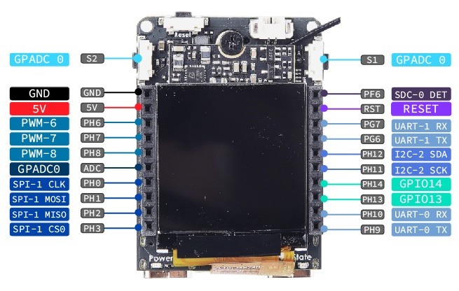
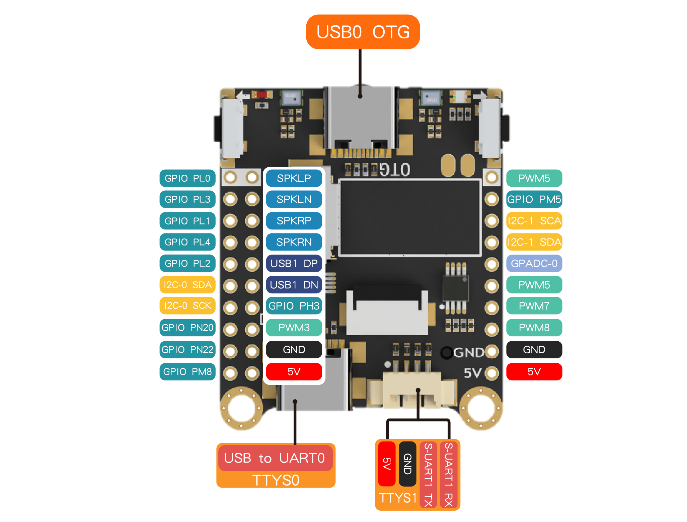

Linux UART 的使用
| 更新时间 | 负责人 | 内容 | 备注 |
|---|---|---|---|
| 2022年1月4日 | Rui | 初次编写文档 | --- |
| 2022年1月8日 | Rui | 修改文档的编写方式 | 使用 Jupyter notebook 进行编写文档 |
| 2022年1月18日 | Rui | 修改文档，增加效果图 | 外设文档通过测试的平台有 MaixII-Dock, 使用的是 MaixPy3 0.4.0 |
UART 使用教程
在 Linux 系统中，串口是以设备的形式存在（/dev/ttyS*），所使用的方式和原来的单片机方式有所不同。这是系统标准的 UART 通讯，和 Linux 系统中的串口操作相似。下面以 MaixII-Dock 为例子，来简单的简述一下如何使用 UART。
准备
通过查看开发板的管脚定义图，确定需要使用的 UART 通道。下面的代码是使用 MaixII-Dock 的 UART-1 通道
 对于 MaixII-Dock ，不要使用 UART-0 通道来进行串口通讯。这个串口是直连芯片，会有一些其他数据吞吐
将 MaixII-Dock 上 UART-1 TX 和 UART-1 RX 短接即可进行串口通讯测试
开始
运行下列代码，即可进行串口通讯，别的开发板用法同理，函数 setDTR 和 setRTS 需要硬件专门连接用于自动下载，普通用户接触不到也不需要关心。
import serial
ser = serial.Serial("/dev/ttyS1",115200) # 连接串口
print('serial test start ...')
ser.write(b"Hello Wrold !!!\n") # 输入需要通讯的内容
for i in range(3):
tmp = ser.readline()
print(tmp)
ser.write(tmp)[ rpyc-kernel ]( running at Mon Jan 17 17:12:46 2022 )
serial test start ...
b'Hello Wrold !!!\n'
b'Hello Wrold !!!\n'
b'Hello Wrold !!!\n'
代码中的 /dev/ttyS1 是指串口通道1，不同的开发板，串口的表示方式不一样，请自行查看对应开发板的串口表达方式
这是标准 Python 的串口库，更多的使用查看 Python serial
UART 用途
这是操作系统的标准 URAT，可以和单片机进行串口通讯，也可以对带有串口协议的设备、外设通讯。
由于太多零基础的同学在使用，我这里就介绍一下主流的传输方式和使用方法。
传递 ASCII 字符串。
如示例代码的 ser.write(b"Hello Wrold !!!\n") 意思就是传递 bytes 字符串，通常出现在 json 或 python 代码作为协议传输的场合，相比其他协议简单易懂，这里用下述代码为例。
try:
a = 0
b = 1.2
c = b"hello"
send = b"%d,%f,%s\n" % (a, b, c)
# 假设串口 Tx Rx 接在一起。
# ser.write(send)
# recv = ser.readline() # 读取以 \n 结尾字符串。
recv = send
result = recv.replace(b"\n", b"").split(b',')
except Exception as e:
print(e)
result = []
for i in result:
print(i)
a = int(result[0])
b = float(result[1])
c = result[2]
print(a, b, c)
b'0'
b'1.200000'
b'hello'
0 1.2 b'hello'
传递 HexString 字符串。
前一种可读性好，但实际传输效率低，因为内容都是可读的 ASCII 字符，而实际场景下比较常用的 modbus ymodem 等与其他芯片沟通的协议。
如果是其他语言，如 C 语言这类底层语言，是可以通过 sprintf 函数转换 int 到 char * 字符串的，如 sprintf(send, "%d,%f,%s\n", 0, 1.2, "hello) 这和前者是一样的。
但还有一种形式，如下 C 代码：
struct data
{
uint8_t head;
uint8_t len;
uint16_t retain_0;
uint32_t id;
float decision;
uint16_t retain_1;
uint8_t sum;
uint8_t end;
} upload_data = { 0x55, sizeof(struct data), 0, 1234, 5678.9, 3, 4, 0x0A };
write(self->dev_ttyS, (uint8_t *)&upload_data, upload_data.len);
那么要如何在 Python 中接收或发送这样的数据给 C 语言呢？
这里我们就要使用 Python 的标准库 import struct 来解决这个问题。
只需要知道两个函数 struct.pack() 和 struct.unpack() 对应封包和解包。
sizeof(struct data) = 1 + 1 + 2 + 4 + 4 + 2 + 1 + 1 = 16 bytes
详细的数据类型定义（>BBHdfHBB）请查阅官方文档格式字符即可了解。
def hex_str_to_bytes(hexString: str) -> bytes:
String = hexString.replace("-", "")
return bytes.fromhex(String)
def bytes_to_hex_str(String: bytes) -> str:
hexString = String.hex()
import re
return '-'.join(re.findall(r'.{2}', hexString))
import struct
upload_data = struct.pack(">BBHdfHBB", 0x55, 16, 0, 1234, 5678.9, 3, 4, 0x0a)
print('serial.write', upload_data)
print('hexstring', bytes_to_hex_str(upload_data))
print('bytes', hex_str_to_bytes(bytes_to_hex_str(upload_data)))
data = struct.unpack(">BBHdfHBB", upload_data)
print('data', data)
for i in data:
print(type(i), i)
serial.write b'U\x10\x00\x00@\x93H\x00\x00\x00\x00\x00E\xb1w3\x00\x03\x04\n'
hexstring 55-10-00-00-40-93-48-00-00-00-00-00-45-b1-77-33-00-03-04-0a
bytes b'U\x10\x00\x00@\x93H\x00\x00\x00\x00\x00E\xb1w3\x00\x03\x04\n'
data (85, 16, 0, 1234.0, 5678.89990234375, 3, 4, 10)
<class 'int'> 85
<class 'int'> 16
<class 'int'> 0
<class 'float'> 1234.0
<class 'float'> 5678.89990234375
<class 'int'> 3
<class 'int'> 4
<class 'int'> 10
这里 struct.pack("> 的 > 和 < 就引出了大小端的问题，不同芯片可能会有不同的大小端，主要影响 int 或 float 的转换方向问题，如 0x09ABCDEF 会被另一个芯片当成 0xEFCDAB09 可以在这个大小端网站体验效果。
例如上述案例数据大佬鼠我可能会写成以下 Python 接收代码：
def checksum(data):
sum = 0
for i in range(len(data)):
sum += data[i]
# print(i, data[i], sum)
return sum & 0xff
import serial
import struct
ser = serial.Serial("/dev/ttyUSB0", 115200) # 连接串口
'''
struct apriltag_data {
uint8_t head;
uint8_t len;
uint8_t retain_0;
uint8_t retain_1;
uint32_t tm;
uint32_t id;
float decision_margin;
float center[2];
float points[4][2];
float rotation[3][3];
uint8_t retain_2;
uint8_t retain_3;
uint8_t sum;
uint8_t end;
} upload_data = { 0x55, sizeof(struct apriltag_data), 0, 0, gs831_get_ms(), 0, 0, { 0, 0 }, { { 0, 0 }, { 0, 0 }, { 0, 0 }, { 0, 0 } }, { { 0, 0 }, { 0, 0 }, { 0, 0 }, { 0, 0 }, { 0, 0 }, { 0, 0 }, { 0, 0 }, { 0, 0 }, { 0, 0 }}, 0, 0, 0, 0x0A };
'''
data, sum = b'', 0
while True:
dat = ser.read(1)
if dat[0] == 0x55:
data = dat
dat = ser.read(1) # datlen
data += dat
# print(len(data), data)
dat = ser.readline()
# print(data[1], len(dat), dat)
if data[1] - 2 == len(dat):
data += dat
sum = checksum(data[:-2])
# print(len(data), data)
if sum == data[-2]:
res = struct.unpack(">BBBBIIffffffffffffffffffffBBbB", data)
# print(res[4:-4])
print("%02.03f %02.03f %02.03f %02.03f %02.03f %02.03f %02.03f %02.03f %02.03f" % (res[17:-4]))
continue
和对应的 C 发送代码：
struct apriltag_data
{
uint8_t head;
uint8_t len;
uint8_t retain_0;
uint8_t retain_1;
uint32_t tm;
uint32_t id;
float decision_margin;
float center[2];
float points[4][2];
float rotation[3][3];
uint8_t retain_2;
uint8_t retain_3;
uint8_t sum;
uint8_t end;
} upload_data = {0x55, sizeof(struct apriltag_data), 0, 0, gs831_get_ms(), 0, 0, {0, 0}, {{0, 0}, {0, 0}, {0, 0}, {0, 0}}, {{0, 0, 0}, {0, 0, 0}, {0, 0, 0}}, 0, 0, 0, 0x0A};
upload_data.id = det->id;
upload_data.decision_margin = det->decision_margin;
upload_data.center[0] = det->c[0];
upload_data.center[1] = det->c[1];
upload_data.points[0][0] = det->p[0][0];
upload_data.points[0][1] = det->p[0][1];
upload_data.points[1][0] = det->p[1][0];
upload_data.points[1][1] = det->p[1][1];
upload_data.points[2][0] = det->p[2][0];
upload_data.points[2][1] = det->p[2][1];
upload_data.points[3][0] = det->p[3][0];
upload_data.points[3][1] = det->p[3][1];
upload_data.rotation[0][0] = R(0,0);
upload_data.rotation[0][1] = R(0,1);
upload_data.rotation[0][2] = R(0,2);
upload_data.rotation[1][0] = R(1,0);
upload_data.rotation[1][1] = R(1,1);
upload_data.rotation[1][2] = R(1,2);
upload_data.rotation[2][0] = R(2,0);
upload_data.rotation[2][1] = R(2,1);
upload_data.rotation[2][2] = R(2,2);
uint8_t *ptr = (uint8_t *)&upload_data;
for (int i = 0; i < upload_data.len - 2; i++)
upload_data.sum += ptr[i];
write(gs831->dev_ttyS, ptr, upload_data.len);
当然方法千千万万，按照自己的实际情况和需要写就好，没有绝对正确的代码，相比之前第一种最好写，但效率不高，如果你的场景不在乎效率，那就随意一些吧。